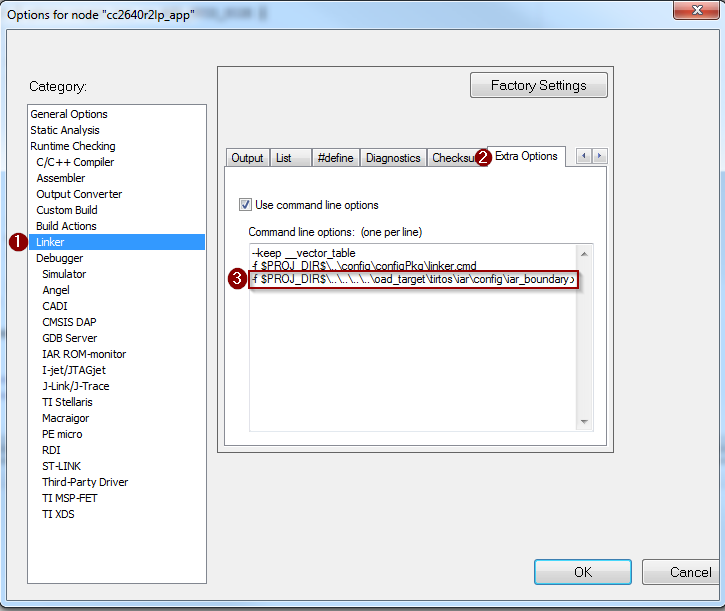

On-Chip OAD¶
This section describes the On-chip OAD process. On-chip OAD uses only internal flash to update the user application. No external memory components are required to implement On-chip OAD. This section aims to address the following procedures that are unique to on-chip OAD:
For information about the OAD profile and image header, please see OAD Concept Overview
For information about the TI OAD Sample Applications that showcase On-Chip OAD, see OAD Projects Overview..
Supported Configurations for On-Chip OAD¶
On-chip OAD supports the split image build configuration only. Stack library image types are not supported.
On-chip OAD supports Application Only and Stack Only OADs. The Stack Only OAD must be followed by an Application Only OAD.
App + Stack Merged Image OADs and App + Stack Library OADs are not supported.
Constraints and Requirements for On-chip OAD¶
The On-chip OAD solution will have two application images residing in the on-chip flash. In this document, the term Persistent Application or Persistent App will refer to the permanently resident project/image that implements the OAD Service and the term Application or User Application will refer to the project/image that implements user customized profiles and implements the OAD Reset Service. Both application images share the same BLE Stack image.
In case of OAD failure, BIM will execute the Persistent App. The Persistent App must implement the TI OAD Service. The User Application can choose not to implement the OAD Service as it can switch to the Persistent Application for downloading a new image. The User Application must implement the OAD Reset Service.
In order to perform On-chip OAD the target system meet the following requirements:
- The Persistent App and the User Application shall share the same BLE stack.
- As a side effect of having permanent resident target application, there is less flash available for the User Application.
- A Stack upgrade should be compatible with the Persistent Application since the Stack is shared between the User Application and the Persistent App.
- The Persistent App should not be upgraded as this provides a backup in case of an OAD failure.
- The Application and Stack must use the split image ICall (FlashROM) architecture to ensure that the Persistent App, User Application and BLE protocol stack do not contain overlapping flash pages
- A Stack Only OAD must be followed by an Application Only OAD
The RTOS ROM configuration is fixed at sector 1/flash page 1. Because this is part of the User Application Image (see On-Chip OAD Memory layout) the User Application should use TI-RTOS ROM implementation, while the Persistent App should use RTOS is flash to avoid dependency on flash page 1, which can be erased during the User Application upgrade process.
The Persistent Application and the User Application should share the same RAM range as only one image is active at any given time. The User Application image must be a complete application image, capable of running independently of the Persistent App.
One SNV page is used by default. If the OAD Image is too large to fit in its allocated space, consider removing some features of the BLE stack to reduce its size.
On-Chip OAD Memory layout¶
The on-chip flash memory is divided into the following sections:
- CCFG and BIM Image
- Persistent Application image
- NV storage area – this area is optional, if user runs short of flash space, it can be compiled out
- Stack image – stack image will be shared between Persistent Application and upgradable User Application image
- Free/Unused space
- Upgradable User Application image
The last page of flash is reserved for BIM, CCFG and interrupt vectors. The Persistent App image will be stored on flash pages below the BIM flash page. Since the Persistent Application image should not be upgraded, this storage arrangement is chosen so that it can be stored at fixed location providing flexibility to upgrade Stack and Application. The flash pages next to this will be used by NVRAM storage. The NVRAM is user configurable, can use up-to two flash pages. To have an efficient BIM implementation, the User Application will be stored at the very bottom of flash, starting at flash page 0.
The memory map for CC2640R2F internal flash in an On-chip OAD configuration is shown below.
Figure 87. On-Chip OAD Memory Layout
BIM for On-chip OAD¶
Warning
The BIM will link the resident CCFG sector. Furthermore,
this is a custom CCFG, with the IMAGE_VALID_CONF field set to
0x1F000. This means that the boot ROM of the device will automatically
execute BIM code instead of application code at startup. BIM
will handle starting the application. OAD applications will not need to
include a CCFG. This is a feature of CC2640R2F, and not compatible
with R1 devices.
The OAD solution requires that permanently resident boot code, the BIM, exists in order to provide a fail-safe mechanism for determining (in preferential order) the image which is ready to run. When a valid image is found, the BIM jumps to that image at which point the image takes over execution. Either the Persistent Application or User Application must implement the proprietary TI OAD Profile. By default, this is the role of the Persistent App. When an image with the OAD Profile downloads a new image, a system reset can be executed to return to BIM to verify the correctness of the download and begin execution.
Figure 88. Functional Overview of On-chip BIM
As the permanent owner of the flash interrupt vectors, BIM provides a fail-safe mechanism for intercepting the reset vector, putting the hardware into a safe state, and taking the most appropriate action by reading the headers of the Persistent App and the User Application.
The On-chip OAD solution supports Application only and Stack only (followed by Application only) OADs. In both upgrade options, the ‘OAD capable’ application will download the new image either by storing at empty flash pages or by replacing the old image with the new one. After successful copy, BIM will calculate the CRC32 of the image. If it matches with image’s CRC32 value embedded in the image, it will set the image ‘CRC Status’ bits to value ‘10’(0xFE) to indicate valid CRC in the image header and execution will be switched to the newly downloaded image. If the device has RAM retention capability over resets then it can use the ‘BIM Argument’ for switching the application execution as described in Application Execution switching using RAM. If the device does not have RAM retention, it can use ‘Image validation bytes’ as described in OAD Image Header for switching.
Application Execution switching using RAM¶
On devices which have RAM retention capability between soft resets, execution switching between application can be done using RAM variables. For example, on the CC2640R2F, execution switching between User and Persistent Applications will be done by writing to a RAM variable stored at a known RAM location. This location will be used explicitly for application switching only. The value will be retained between soft resets.
The RAM variable called ‘BIM Argument’ is two bytes long with values as defined in Description of the BIM Argument variable.. The byte 0 value defines the meaning of the byte 1 content. In SimpleLink CC2640R2 SDK, there are two valid values for byte 0: ‘0’ and ‘1’. Values 2-255 are reserved for future use. If BIM encounters a byte0 value greater than 1, it will consider if invalid, will try to find the default application starting from flash page ‘0’, by reading image header.
| Byte 0 Value | Byte 1 Value | Description |
|---|---|---|
| 0 | 0 | Default value after hard reset. The ‘argument variable’ contents are invalid, BIM needs to find a valid on-chip user application and execute it. If BIM cannot find the valid User Application, then it will try to find a valid Pesistant App and execute. If it is unable to find either application it will put the device to low power sleep mode. |
| 0 | Flash page number | Byte 1 contains the application start address BIM needs to jump to on resuming execution after a soft reset. The address will be in terms of flash page number. |
| 1 | Image Type | Version required to support image format |
| 2-255 | N/A | Version of Image Header contained in image |
Only two applications can co-exist on the on-chip flash in the CC2640R2F. The value of Image Type = ‘1’ defines User Application image and Image Type = ‘0’ defines Persistent Application. When the target application downloads a new valid application image which needs to be executed, it sets the RAM argument variable’s byte0=0 and byte1=1 and triggers a soft reset. The soft reset will cause BIM to execute. BIM, on resuming execution, will read this value and find that it need to run the User Application, it will start looking for the image header of the User Application starting at flash page 0. After finding a valid image header, BIM will jump to the start address of the User Application.
If the Application knows flash page number it wishes to jump to, it sets byte0=1, and sets the value of byte 1 to the flash page number of the application image start address. On resuming execution, BIM will read these values and jumps directly to that page, and execute the application if that flash contains the valid executable application.
Note: An application image is considered valid if it has ‘CRC status’== 0xFE(CRC valid).
Out of the Box Demo (On-Chip OAD)¶
The SimpleLink CC2640R2 SDK includes demo projects that are setup to use OAD in advance. These build configurations may be flashed onto the device out of the box. All out of the box demos use BTool as the OAD Downloader. Please see OAD Topology Overview for more information. Ensure that BTool is setup correctly first. See BTool Setup for steps on how to do so. The steps listed below assume that a CC2640R2 Launchpad is being used. Additional steps may be required for custom hardware.
Furthermore, the steps in this section are referring to the OAD Target device, the images referenced below should be flashed onto that device.
Using CCS¶
Warning
If both the OAD Target and the OAD Downloader are connected at the same time, CCS may load the image to the wrong device. This is because CCS will select the first XDS110 it finds. This behavior can be avoided by unplugging the OAD Target device, or by setting a multi emulator debug session using CCS. See the wiki Debug with Multiple Emulators for more information.
Import the
bim_oad_onchip_cc2640r2lp_app,persistent_app_cc2640r2lp,simple_peripheral_cc2640r2lp_oad_onchip_stack, andsimple_peripheral_cc2640r2lp_oad_onchip_appprojects into the workspace. This can be done by importing thesimple_peripheral_cc2640r2lp_oad_onchip_appproject. It will pull the other required projects in automatically.Figure 89. On-chip OAD CCS Workspace
Build the projects in the following order:
bim_oad_onchip_cc2640r2lp_app,persistent_app_cc2640r2lpsimple_peripheral_cc2640r2lp_oad_onchip_stacksimple_peripheral_cc2640r2lp_oad_onchip_app
Use Smart RF Flash Programmer 2 to load the hex images created in the previous step to the CC2640R2 Launchpad. Since a valid image header is required for the Application and stack images, use the simple_peripheral_cc2640r2lp_oad_onchip_app_FlashROM_oad_merged.hex to flash both the User Application and the Stack.
- By default these images can be found at:
\workspace_v7\<PROJECT_NAME>/FlashOnly/ - Make sure to erase all unprotected pages so any old code in CC2640R2 Launchpad is removed.
- By default these images can be found at:
You should now be able to observe that the device is advertising via BTool.
- The Persistent App advertises as “OAD Persistent App”.
- See BTool OAD Verify Advertising for steps.
Make your application level changes that are intended for OAD update. Follow steps in Changing Application Data to Verify an OAD for a trivial way to change app to verify the OAD. Build the application with changes.
- Remember that with the architecture of On-chip OAD, the User
Application is
simple_peripheral_cc2640r2lp_oad_onchip_app. Changes should be made to the User Application as the Persistent App is permanently resident.
- Remember that with the architecture of On-chip OAD, the User
Application is
Use BTool to OAD your modified application file following the steps detailed in BTool OAD Procedure
- Make sure you are using the *_oad.bin file with BTool as this file
contains the image header. By default these images can be found at:
\workspace_v7\simple_peripheral_cc2640r2lp_oad_onchip_app
- Make sure you are using the *_oad.bin file with BTool as this file
contains the image header. By default these images can be found at:
Attention
After a successful OAD, the new image must be enabled. This is done by writing the Enable OAD Image Command to the OAD Control Characteristic. BTool will send the appropriate command automatically.
Using IAR¶
Open
simple_peripheral_oad_onchip.ewwworkspace. This will open all four required projects.Build the projects in the following order:
cc2640r2lp_bim_onchipcc2640r2lp_persistent_appcc2640r2lp_stackcc2640r2lp_appBuilding the
cc2640r2lp_appproject, will generate a production (superbin) file as discussed in Generating a Production Image for OAD. By default the superbin is generated in the project’s build folder.Load the superbin created in the previous step onto the CC2640R2 Launchpad using Smart RF Flash Programmer 2.
- Make sure you are using the *_oad.bin file with BTool as this file
contains the metadata. By default these images can be found at:
\examples\rtos\CC2640R2_LAUNCHXL\ble5stack\oad_target\tirtos\iar\app\FlashROM\Exe - Make sure to erase all unprotected pages so any old code in the image B region is removed.
- Make sure you are using the *_oad.bin file with BTool as this file
contains the metadata. By default these images can be found at:
You should now be able to observe that the device is advertising via BTool.
- The Persistent App advertises as “OAD Persistent App”.
- See BTool OAD Verify Advertising for steps.
Make your application level changes that are intended for OAD update. Follow steps in Changing Application Data to Verify an OAD for a trivial way to change
cc2640r2lp_appto verify the OAD. Build the Application with changes.- Remember that with the architecture of On-chip OAD, the User
Application is
cc2640r2lp_app. Changes should be made to this application ascc2640r2lp_persistent_appis permanently resident and cannot be updated.
- Remember that with the architecture of On-chip OAD, the User
Application is
Use BTool to OAD your modified application file following the steps detailed in BTool OAD Procedure
- Make sure you are using the *_oad.bin file with BTool as this file
contains the metadata. By default these images can be found at:
\examples\rtos\CC2640R2_LAUNCHXL\ble5stack\simple_peripheral_oad_onchip\tirtos\iar\app\FlashOnly_OAD_ImgB\Exe - The User Application advertises as “SBP OAD APP vXXX where XXX is the value of SOFTVER.
- Make sure you are using the *_oad.bin file with BTool as this file
contains the metadata. By default these images can be found at:
Attention
After a successful OAD, the new image must be enabled. This is done by writing the Enable OAD Image Command to the OAD Control Characteristic. BTool will send the appropriate command automatically.
Add On-Chip OAD to an Existing Project¶
Note
All the following changes get applied to the application side. Stack side should remain untouched for all OAD configurations. For more information see Stack Side Changes for OAD Project.
Use BIM, Persistent App, and Stack projects, as is. No change is required.
Add OAD Reset Service and OAD Image Header to the Application project:
- The required files can be found in
\source\ti\blestack\profiles\oad\cc26xxoad_image_header_app.coad_image_header.hoad_reset_service.coad_reset_service.h
- The required files can be found in
Add the necessary include paths to the project:
- The OAD profile code can be found at
\source\ti\ble5stack\profiles\oad\cc26xx
- The OAD profile code can be found at
Add the following defines to the Application:
- FEATURE_OAD_ONCHIP
- OAD_ONCHIP
- IMAGE_INVALIDATE
- HAL_IMAGE_B
Add the Stack’s boundary definition See screen shots below.
- IAR
- CCS
Use the proper On-chip OAD linker file and configure it properly.
IAR projects should use
cc26xx_app_oad.icfPass in the following defines to the linker:
- CC2650=2
- FLASH_ONLY_BUILD=2
Add the Persistent Stack’s boundary definition See screen shot below.

CCS projects should use
cc26xx_app_oad_onchip.cmd- Pass in the following defines to the linker:
- R2=1
- Pass in the following defines to the linker:
Add the Stack’s boundary definition See screenshot below.
Add necessary code to your high level application file to include the OAD Reset Service. This service is used to switch to the Persistent App to begin the OAD process.
Add the following defines to your application file (i.e. simple_peripheral)
// Used for imgHdr_t structure #include "oad_image_header.h" // Used for OAD Reset Service APIs #include "oad_reset_service.h" ...
Within the application’s init routine, add the OAD reset service.
Reset_addService((oadUsrAppCBs_t *)&SimpleBLEPeripheral_oadResetCBs);
Add local functions to process Writes to the Reset Characteristic and Reset Events:
static void SimpleBLEPeripheral_processOadResetEvt(oadResetWrite_t *resetEvt); void SimpleBLEPeripheral_processOadResetWriteCB(uint16_t connHandle, uint16_t bim_var);
# Add profile callbacks for the Reset Service:
static oadResetWriteCB_t SimpleBLEPeripheral_oadResetCBs = { SimpleBLEPeripheral_processOadResetWriteCB // Write Callback. };
- Add necessary events
- Add code to callbacks
- Add the necessary arguments to your configuro script to relocate your
Application’s reset vector address.
- Add
OAD_IMG_B=1to your –cfgArgs. See Using a custom reset vector address for your application for more information.
- Add